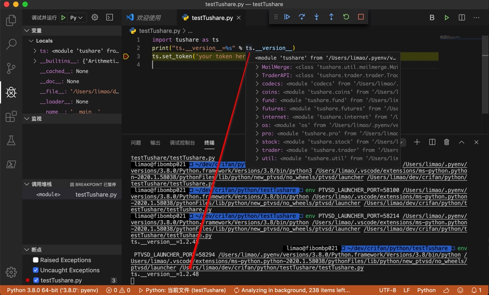
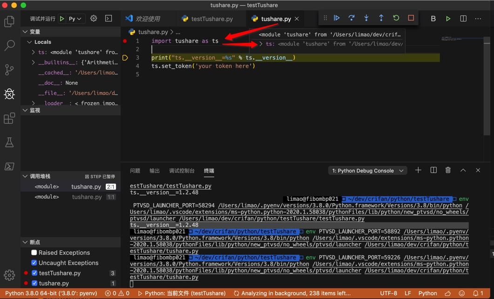
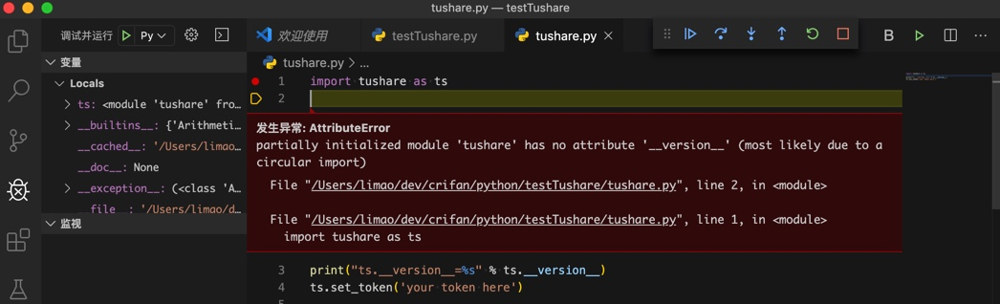
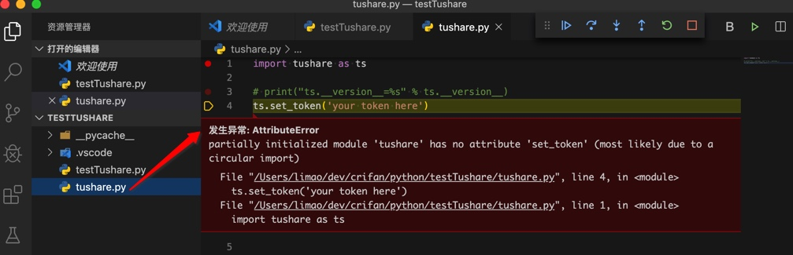
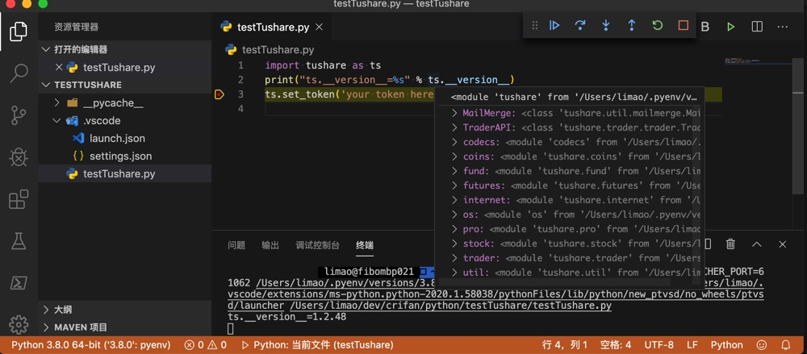

测试文件名和库同名
还有一种新手常见的问题是：把测试文件或变量的名字，和要调用的库名字一样，从而导致各种难以察觉的问题。
下面举例解释：
导入tushare出错
问题
解答
刚开始看，以为是其他什么问题呢。
帮其搜索：
tushare
找到：
module tushare has no attribute set_token
新人发帖求助！python使用tushare股票分析包方法报错-CSDN论坛
估计你的文件名叫tushare.py, 改个名就好了.
-> 那估计是这个问题了：小白测试python时，把测试文件，写成了：tushare.py
和要测试的库tushare重名了。
导致Python解析器去解析代码
import tushare as ts
变成自己的测试文件tushare.py，而不是要测试的库tushare了。
也看到了别的类似的例子
pycharm 导入tushare错误，请帮帮忙，百度半天也没搞定-CSDN论坛
import tushare as ts
print(ts.__version__)
提示错误##########
D:\Programs\Anaconda3\python.exe D:/PythonWorks/PycharmProjects/Stocks/tushare.py
Traceback (most recent call last):
File "D:/PythonWorks/PycharmProjects/Stocks/tushare.py", line 1, in <module>
import tushare as ts
File "D:\PythonWorks\PycharmProjects\Stocks\tushare.py", line 2, in <module>
print(ts.__version__)
AttributeError: module 'tushare' has no attribute '__version__'
Process finished with exit code 1
很明显就是同样的问题。
我下好了tushare 导入正确，但是在调用函数的时候，为什么总是报没有这个函数呢，
print(help(ts.get_k_data()))AttributeError: module ‘tushare’ has no attribute ‘get_k_data’
或许你将tushare进行了改变，赋值替换了它或自己新建了一个叫tushare的文件
AttributeError: module ‘tushare’ has no attribute ‘version’ · Issue #241 · waditu/tushare · GitHub
不要以tushare作为文件名
在策略模块定义函数引用tushare pro – VincentZHOU – JoinQuant
也有可能你的研究中有一个叫 tushare.py 的文件，导致没有调到真正的 tushare 包，如果有的话可以试着改个名字
此处Mac中去写代码测试效果：
先用pip安装库
【已解决】mac中pip安装Python库tushare
然后去VSCode中写代码测试：
起个正常的，典型的，用于测试的文件名：
比如：
testTushare.py
import tushare as ts
print("ts.__version__=%s" % ts.__version__)
ts.set_token('your token here')
可以正常输出：
ts.__version__=1.2.48

而如果改为：
用于测试的文件名，和要测试的库tushrare同名，变成：tushare.py
import tushare as ts
print("ts.__version__=%s" % ts.__version__)
ts.set_token('your token here')
加断点调试时就会发现，导入的ts，其实是空的，啥函数和属性都没有：

由此后面的代码：
print("ts.__version__=%s" % ts.__version__)
就会报错了：
发生异常: AttributeError
partially initialized module ‘tushare’ has no attribute ‘__version__’ (most likely due to a circular import)
File “/Users/limao/dev/crifan/python/testTushare/tushare.py", line 2, in <module> File “/Users/limao/dev/crifan/python/testTushare/tushare.py", line 1, in <module> import tushare as ts

如果注释掉上面一行，用下面的
ts.set_token('your token here')
去测试，也是同样问题：

与之对比：
名字不要是库名，即可正常导入和调试：

结论
写(python)代码用于测试时，创建测试用的(python)文件
- 应该：起个，见名知意的，更加易懂的，不容易混淆的文件名
- 常见思路和做法：测试用的，演示用的文件名中 ，往往包含
test，demo，example等字眼 - 此处：
- 举例：比较合适的写法
testTushare.pydemoTushare.pytushareDemo.pytushareTest.pytushareExample.py
- 举例：比较合适的写法
- 常见思路和做法：测试用的，演示用的文件名中 ，往往包含
- 不应该：和测试的库同名
- 此处：
- 用于写测试tushare的Python库的测试文件，不要写成：
tushare.py
- 用于写测试tushare的Python库的测试文件，不要写成：
- 坏处：会和原有的库冲突
- 导致：import导入时，错误导入了自己的测试文件，而不是原有的库
- 此处：
- -》引申 + 举一反三 + 相关：
- 也不应该：起个其他简单的，偷懒的名字
- 典型的有：
1.py123.pytest.pydemo.pya.pyabc.py- 等等
- 都是属于：
- 坏习惯
- 偷懒的写法
- 容易和其他文件冲突的写法
- 也不容易看懂=没法从你文件名看出你要做什么
- 典型的有：
- 也不应该：起个其他简单的，偷懒的名字